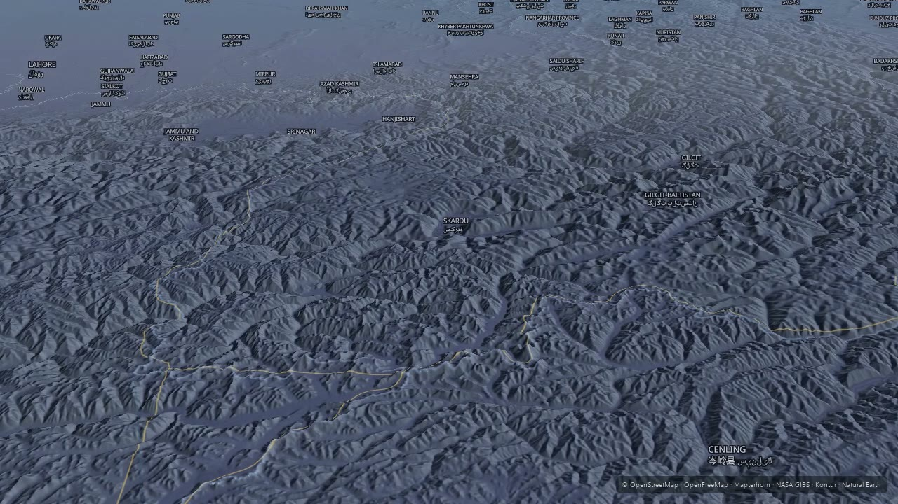
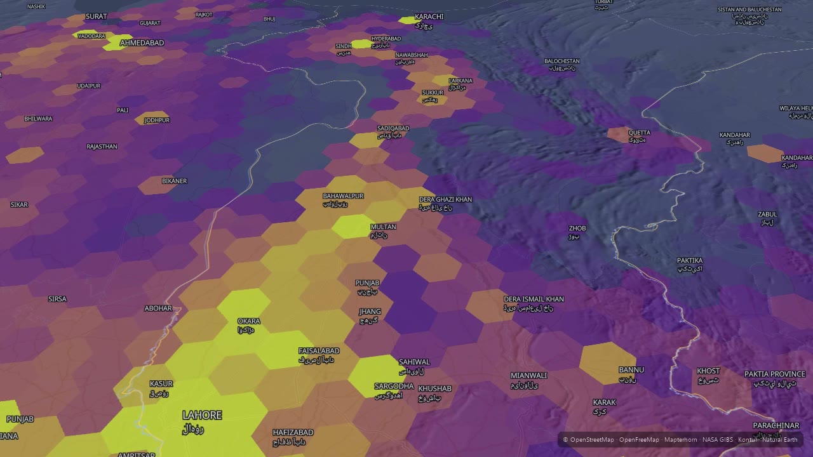
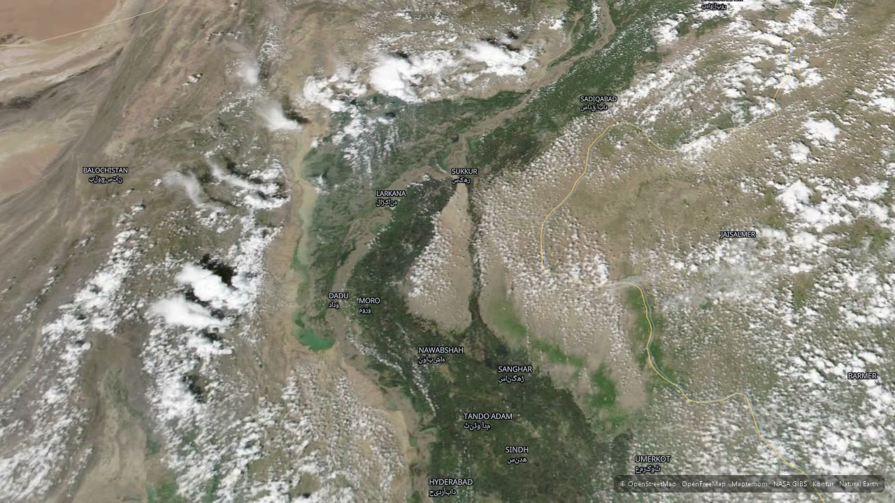
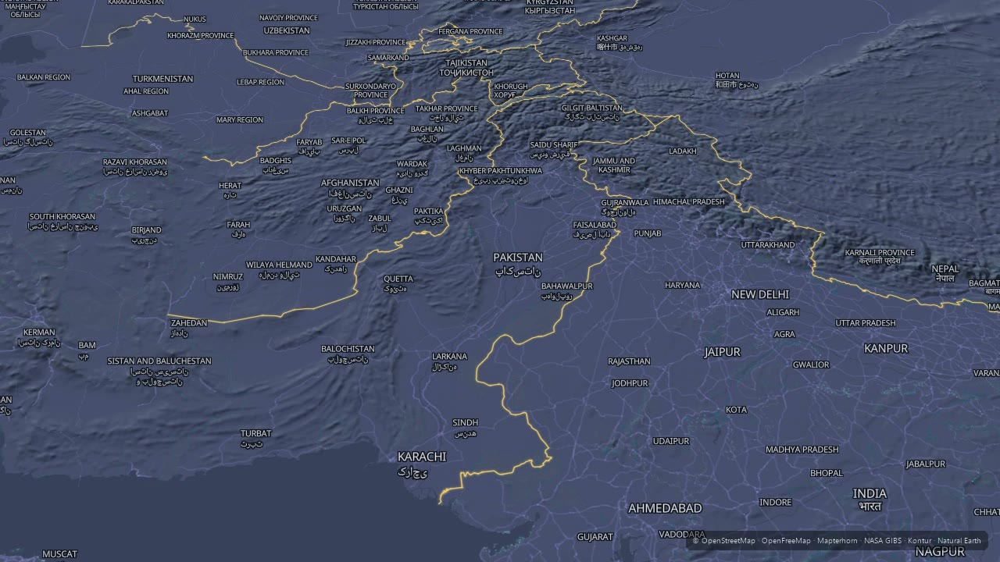

✕
The usual way
Export stills. Rebuild the camera by hand. Re-time every overlay when the script changes. Pay per map load.
Give it a place, a script and the data layers that matter. It returns a narrated documentary — 3D terrain, satellite imagery, population and borders, all timed to the words. Rendered on your own GPU.
Getting from one to the other normally means a motion designer, a week of After Effects, and a metered map subscription. Change one number and you start again.
Export stills. Rebuild the camera by hand. Re-time every overlay when the script changes. Pay per map load.
The script drives the picture. Write “nine out of ten live along this river” and the population layer arrives on that line.
The second film costs nothing. Change the bounding box and the script, run it again, get a different documentary.
No mockups. These are stills from finished films — the Karakoram, the Indus, and the 2022 floods in Sindh.




The script is synthesised locally and force-aligned word by word, so the film's length is set by the writing rather than a guess.
Shots expand to one keyframe per frame — holds, fly-tos, orbits and great-circle paths along a route.
The renderer's own camera model works out precisely which tiles each frame needs and downloads them before a single frame is drawn.
Set camera, wait until the map is genuinely settled, screenshot. Two runs of the same track produce the same pixels.
Layers cross-fade at the moment the narration reaches them, driven by a beats file you can hand-edit.
Music ducked under the voice, attribution burned in, encoded on your GPU.
Every source is free and key-less: OpenStreetMap basemaps, Mapterhorn terrain, NASA satellite imagery, Kontur population, Natural Earth borders. Voice and alignment run on your machine.
Render a hundred films a month and the marginal cost is electricity.
A licence is one payment. The renders are yours, unlimited, forever.